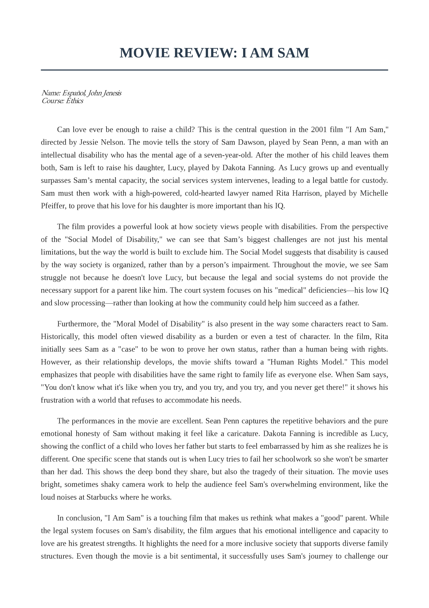
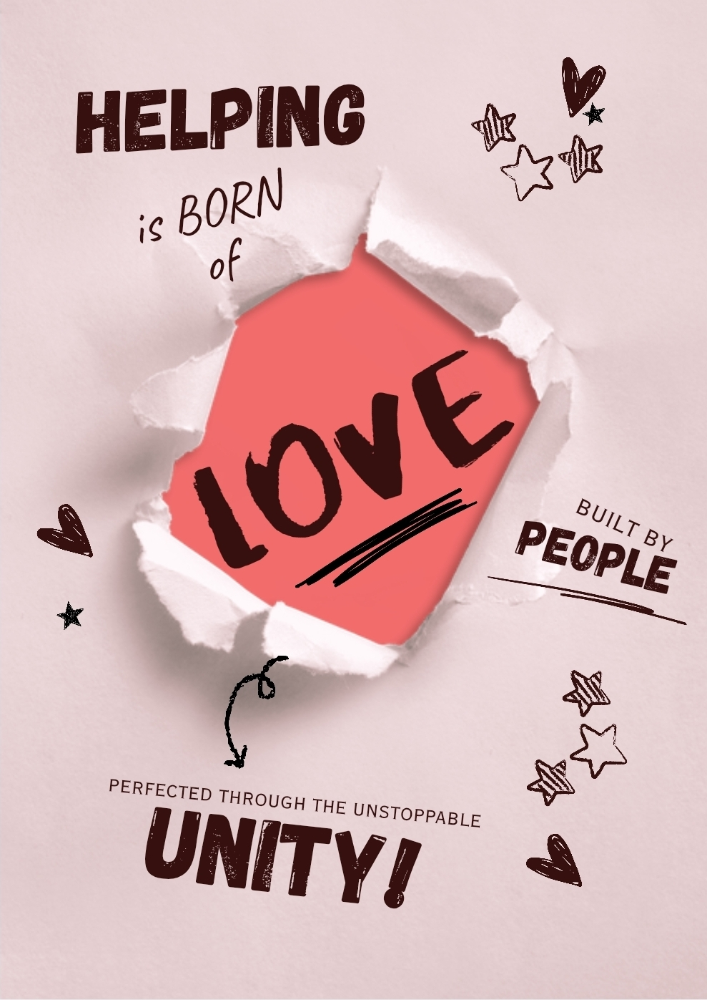
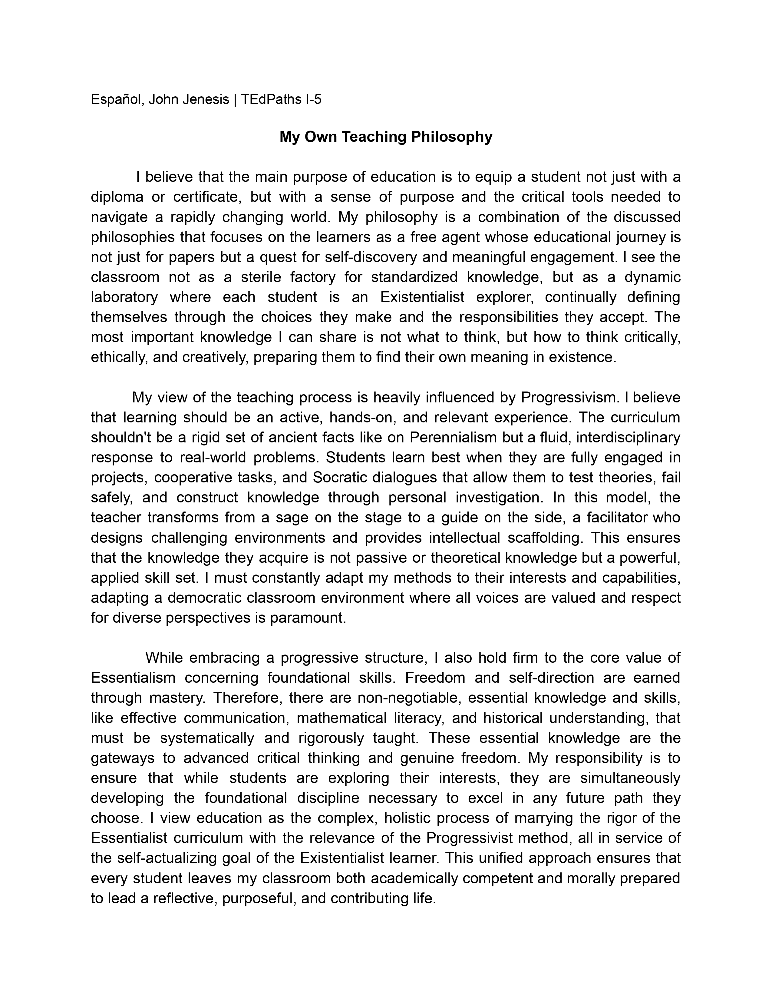
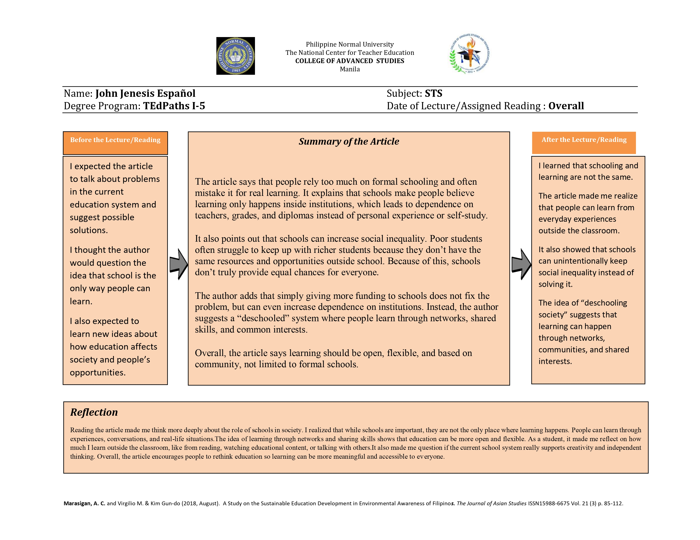
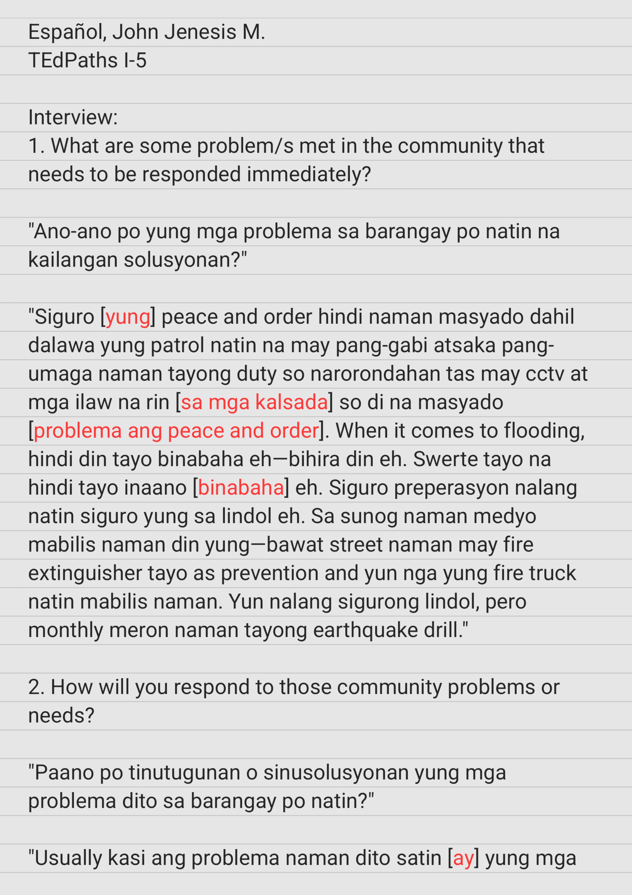
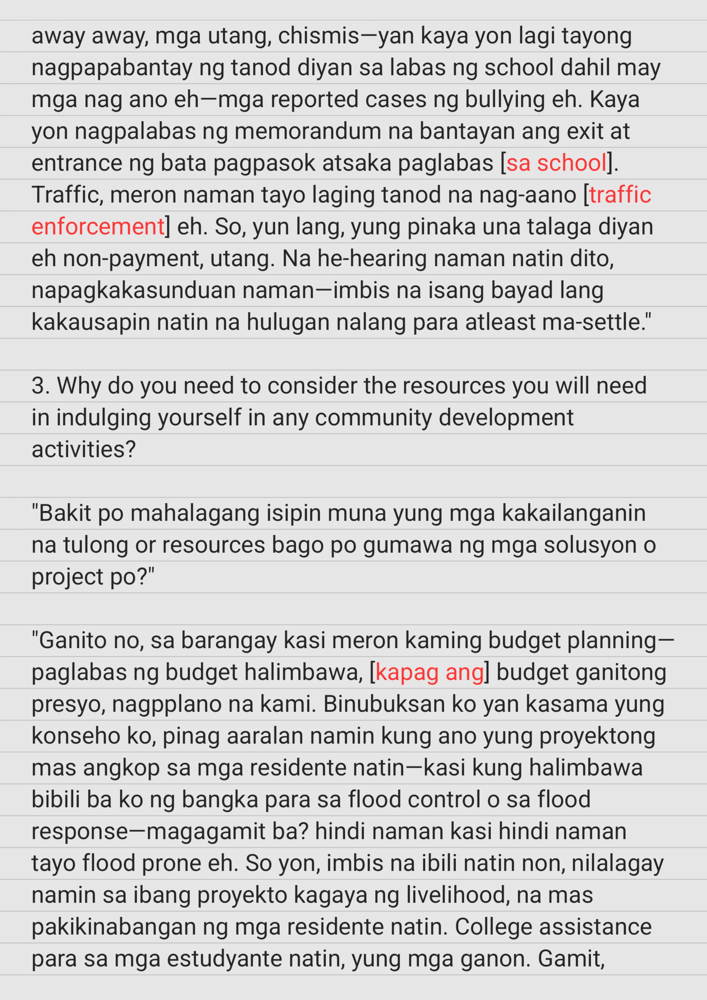
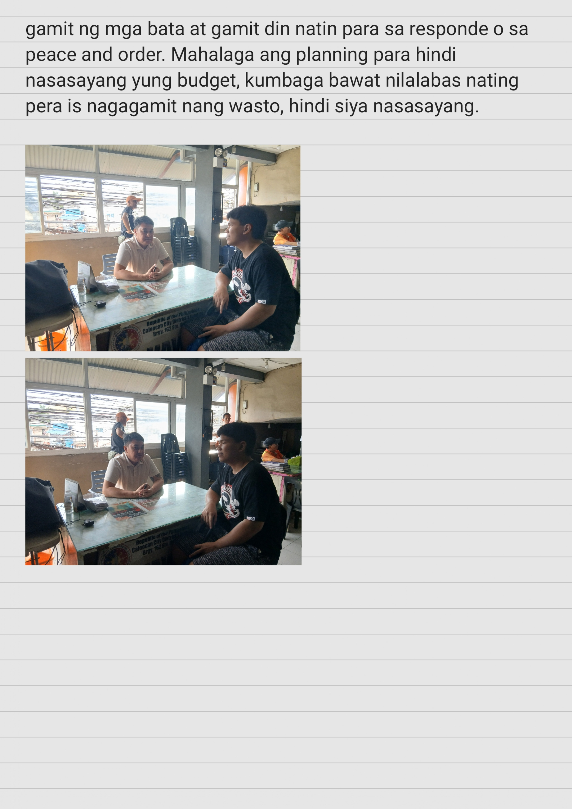

Welcome to My Developmental ePortfolio
Pre-Service Teacher: John Jenesis M. Español
Program: Bachelor of Technology and Livelihood Education with Specialization in Information and Communication Technology
Current Stage: Aspiring Teacher Stage
Purpose of the Portfolio
According to the University's curriculum guidelines, this developmental portfolio is a comprehensive record showcasing progress and achievements across various courses. It includes reflections, assignments, projects, and other evidences demonstrating learning and development. This serves as the exit point for the Aspiring Teacher Stage, marking the culmination of my initial year in the program. This ePortfolio will be continuously updated and referenced throughout my four-year stay at the University to document my professional growth and reflective practice.
My Emerging Educational Guiding Principles
Mastering the basics: I believe that students must master the basics before they proceed to learn complex concepts. Learning is like building a house, you cannot build the roof without a strong foundation. In my future classroom, I want to make sure that every student truly understands the simple, foundational lessons first before proceeding to the advanced parts. If we rush to complex ideas too fast, students get confused and left behind—this is a common problem that I frequently encounter with students—they hardly understand the basics, then proceed to the complex concepts which just makes learning much more harder. By focusing on the fundamentals, I give my students the tools and the confidence they need to successfully handle harder lessons later on.
| Summary of Scores and Interpretation | ||||
|---|---|---|---|---|
| Name | John Jenesis M. Español | |||
| Year and Section | BTLE-ICT I-9 | |||
| The summary score is used to understand your current stage in the continuum of teacher development. This interpretation is meant to support your reflection and guide your personal and professional growth. It is intended not only as a scoring mechanism but also as a guide for your reflective growth and professional self-awareness as a pre-service teacher. The interpretation of scores should be approached as a developmental guide for you rather than a summative judgment of your Year 1 career in the University. | ||||
| Institutional Outcomes | Weighted Scores | |||
| 1 | 2 | 3 | 4 | |
| Digital Literate and Data-Driven Decision Maker | 0 | 1 | 1 | 2 |
| Design Thinker and Innovator | 1 | 0 | 0 | 2 |
| Discerning and Compassionate Person | 2 | 0 | 1 | 0 |
| Dynamic Lifelong Learner and Leader | 1 | 1 | 0 | 1 |
| Deeply-rooted Global Citizen | 0 | 1 | 2 | 0 |
| Sub-total | 4 | 3 | 4 | 5 |
| Weight | 4 | 6 | 12 | 20 |
| Weighted Sum | 42 | |||
| Aspiring Teacher Stage | Consolidating | |||
| Interpretation | You are consistently engaged and committed to becoming a teacher. You show responsibility, creativity, and openness to growth. Use this stage to set goals and keep strengthening your skills. | |||
Table 3. Table for Interpreting Self-Assessment Score
| Score Range | Stage Placement | Institutional Interpretation Text |
|---|---|---|
| 15 - 24 | Exploring Aspiring Teacher | Your responses suggest that you are still in the early stages of exploring the teaching profession. You may be feeling uncertain or disconnected from some of the expectations and values of the field. This is a natural part of the journey. At this stage, it is important to seek support, ask questions, and begin building a clearer understanding of your motivations and role as a future educator. |
| 25 - 37 | Emerging Aspiring Teacher | You are beginning to engage with the key competencies expected of aspiring teachers. There is evidence of developing interest, some initiative, and a growing awareness of your responsibilities. Use this stage to build confidence, reflect on your learning experiences, and continue refining your sense of purpose in the profession. Progress is underway. |
| 38 - 50 | Committed Aspiring Teacher | Your score reflects consistent engagement and a clear commitment to the teaching profession. You demonstrate responsibility, creativity, and openness to improvement. You likely recognize the value of your role as a future educator. This is an ideal time to deepen your reflection, set specific goals, and strengthen areas where you still see room for growth. |
| 51 - 60 | Intentional Aspiring Teacher | You show strong alignment with the values, skills, and mindset of the teaching profession. Your responses indicate that you approach your development with purpose and clarity. You likely demonstrate leadership, ethical awareness, and a global perspective. Continue nurturing these strengths and consider how you can contribute to your peers’ growth as well. You are preparing with the intention of a meaningful teaching career. |
Table 1. Rating Scale, Description, and Interpretation
| Score | Description | Interpretation |
|---|---|---|
| 1 | Not Yet Demonstrated | I am still developing my understanding and ability to apply this in my practice. I seldom demonstrate this behavior or competency. |
| 2 | Occasionally Demonstrated | I show this sometimes, but I need more practice or clarity in applying it. I sometimes show this behavior or competency, but not consistently. |
| 3 | Often Demonstrated | I apply this in most situations, but not consistently. I usually demonstrate this behavior or competency. |
| 4 | Consistently Demonstrated | I consistently apply or embody this in my academic and teaching-related activities. I regularly demonstrate this behavior or competency. |
Table 2. Self-Assessment Tool for Aspiring Teachers
| Institutional Outcomes | Indicators | Rating | Evidence (Means of Verification) | Reflection Narrative Box |
|---|---|---|---|---|
|
Digital Literate and Data-Driven Decision Maker [Acquire basic understanding of digital tools and data usage] |
1.1.1 I have used basic digital tools (e.g., Word, Excel, learning platforms) to complete my GE coursework, submitting at least 90% of outputs on time with at least a satisfactory rating. | 4 |
 Click the photos to access the files. |
How have you used digital tools to enhance your academic work, and how do you plan to apply these skills in your future teaching? |
| 1.1.2 I have presented my outputs in an organized, purposeful and meaningful way across my GE courses, meeting the agreed criteria and achieving at least a satisfactory rating. | 4 | |||
| 1.1.3 I have demonstrated responsible and ethical use of digital platforms (e.g., online forums, cloud storage, social media) for collaboration in my GE courses, upholding academic integrity and meeting the agreed criteria. | 3 | |||
| 1.1.4 I have reflected on how my use of data and digital tools has contributed to my professional identity and competence, and how these experiences have shaped my future ready teaching practices, by preparing portfolio entries throughout the academic year, meeting the agreed criteria. | 2 | |||
|
Design Thinker and Innovator [Shows creativity in problem solving.] |
1.2.1 I have applied creative and critical thinking to solve at least two interdisciplinary or cross-GE problems, as shown in outputs or activities evaluated with at least a satisfactory rating. | 4 |
 Click the photo to access the files. |
Describe a time when you applied creativity to solve a problem in class. What did you learn from the experience? |
| 1.2.2 I have produced at least two original or adapted academic outputs (visual, multimedia, or models) in GE courses that show innovation and thoughtful design, meeting the agreed criteria and earning at least a satisfactory rating. | 4 | |||
| 1.2.3 I have reflected on how innovation enhances future teaching practices and learner engagement by preparing portfolio entries throughout the academic year, meeting the agreed criteria. | 1 | |||
|
Discerning and Compassionate Person [Demonstrates basic empathy and understanding.] |
1.3.1 I have completed a self-assessment during the academic year reflecting on my thoughts, feelings, and academic journey with empathy, respect, and ethical judgment, covering my learning and experiences in my GE courses, as evaluated through an agreed rubric. | 1 |
 Click the photo to access the file. |
Recall a situation where you showed empathy in an academic task. How did this help you grow as a future teacher? |
| 1.3.2 I have communicated my principles and ethical beliefs with respect and sensitivity in class discussions, group activities, and presentations, and documented these experiences in written outputs, earning at least a satisfactory rating. | 1 | |||
| 1.3.3 I have reflected on the role of compassion and discernment in becoming a responsible, future-ready teacher by preparing portfolio entries throughout the academic year, meeting the agreed criteria. | 3 | |||
|
Dynamic Lifelong Learner and Leader [Engages in self-directed learning.] |
1.4.1 I have set goals and sought learning opportunities to improve my personal and academic development by preparing and reviewing a personal development plan at the start, midyear, and end of the academic year, documenting at least two learning opportunities pursued. | 1 |
 Click the photo to access the files. |
What personal or professional goal have you pursued recently, and how has it helped you become more self-directed? |
| 1.4.2 I have contributed to individual and group tasks, showing initiative and openness to feedback, as evaluated by peers or faculty each trimester with at least a satisfactory rating. | 4 | |||
| 1.4.3 I have reflected on how habits of continuous learning prepare me for the teaching profession by preparing portfolio entries throughout the academic year, meeting the agreed criteria. | 2 | |||
|
Deeply-rooted Global Citizen [Exhibits awareness of global issues.] |
1.5.1 I have participated in global or intercultural activities, discussions, or projects in my GE courses, demonstrating respect for diverse systems, cultures, and issues as shown in rubric-based evaluations. | 3 |
   Click the photos to access the files. |
Share an experience where you connected a local issue to a global concern. How did it shape your views as an educator? |
| 1.5.2 I have demonstrated openness to diverse cultural and social perspectives by participating in community service or intercultural dialogues in my GE courses, as reflected in peer and faculty evaluations. | 3 | |||
| 1.5.3 I have reflected on how I embrace my responsibility of being globally aware and locally responsive in preparing for future teaching by preparing portfolio entries throughout the academic year, meeting the agreed criteria. | 2 |